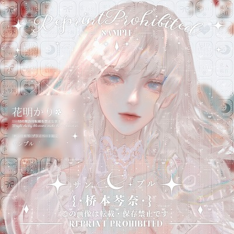
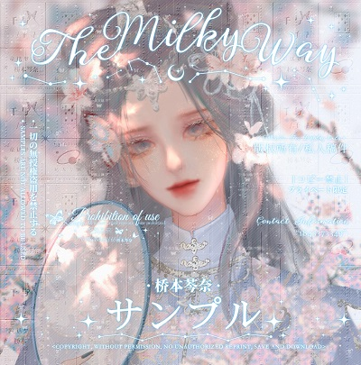
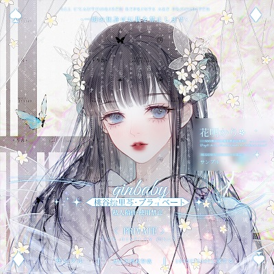

请播放歌曲……
[ti:Say so] [ar:LISA] [00:02.00]制作：阿土 [00:03.10]music [00:04.00][00:22.50]Day to night to morning, keep with me in the moment [00:08.60][00:25.00]I'd let you had I known it, why don't you say so? [00:12.57][00:29.50]Didn't even notice, no punches left to roll with [00:17.26][00:34.50]You got to keep me focused; you want it? Say so [00:37.00]music end
lisa
艾欧尼亚
赴春日之约
Say so
- LISA
ADOI DESIGN
我喜欢的音乐
1314首
特别关注(1)

女主角
均衡教派
收藏的ID (5)

失魂落魄
均衡教派
心有灵犀
均衡教派
yone
均衡教派
some
均衡教派

yuumi
均衡教派
Say so
- LISA